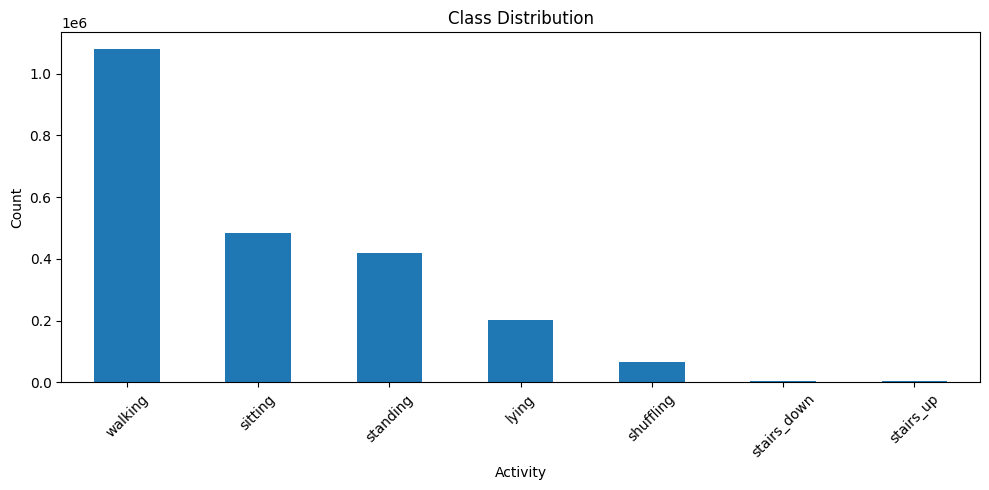
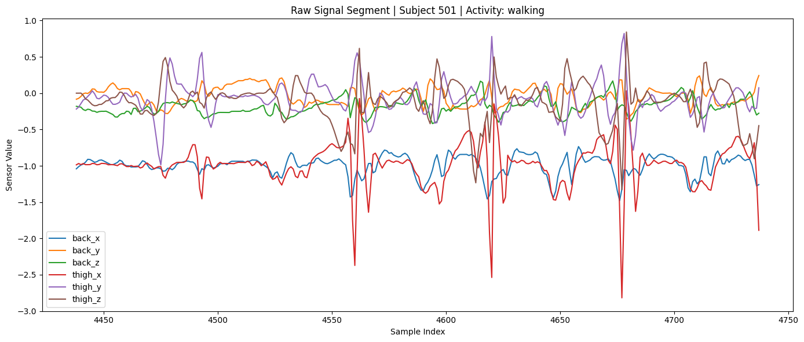
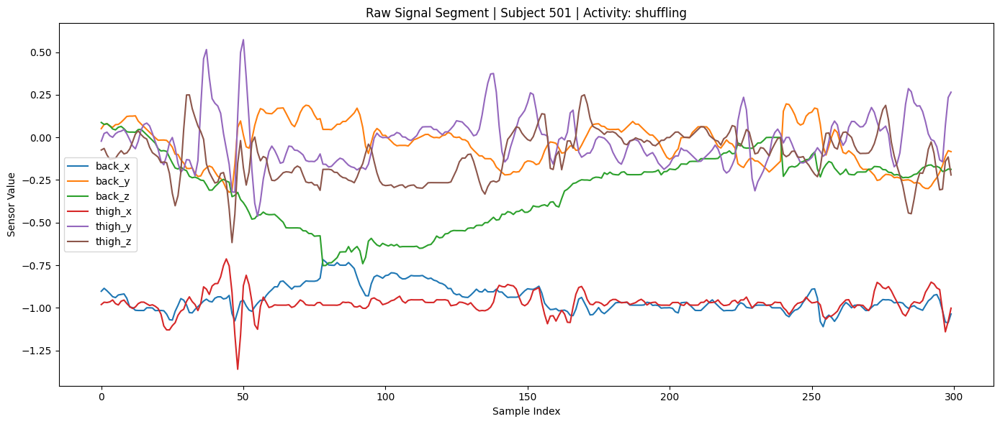
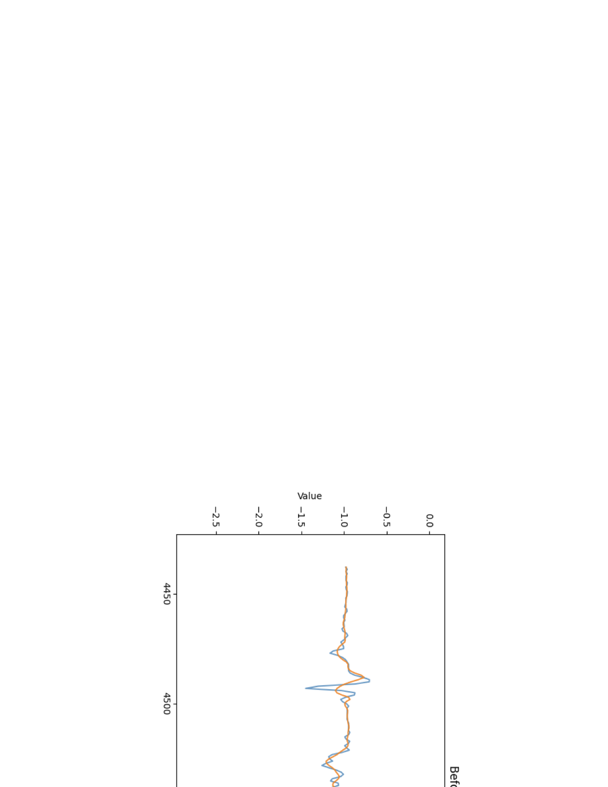
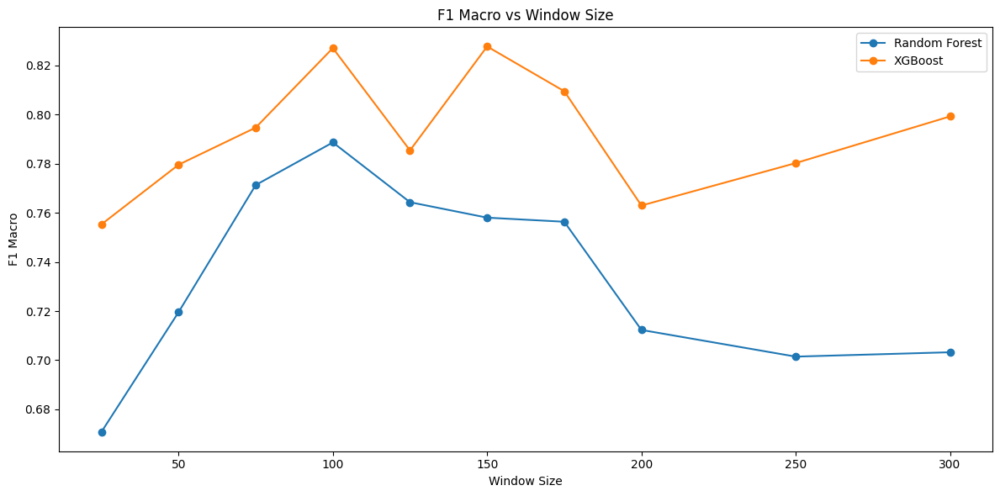
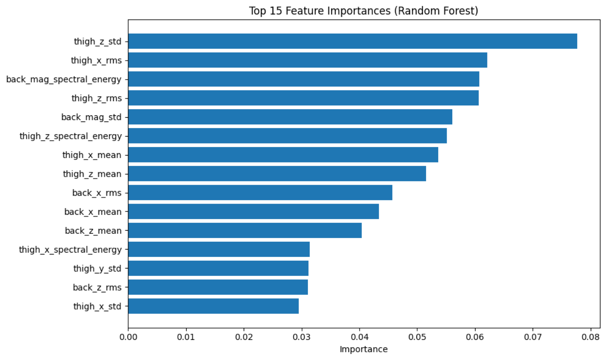
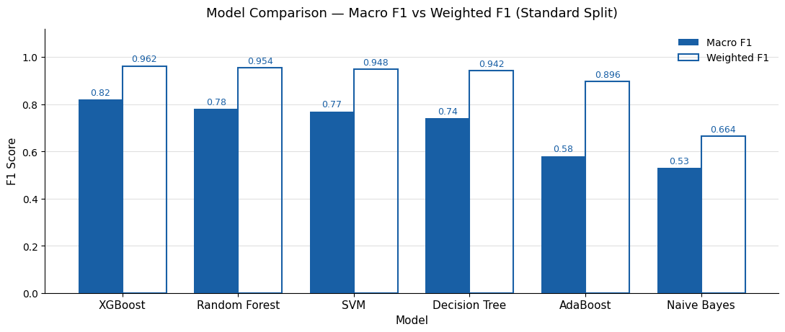
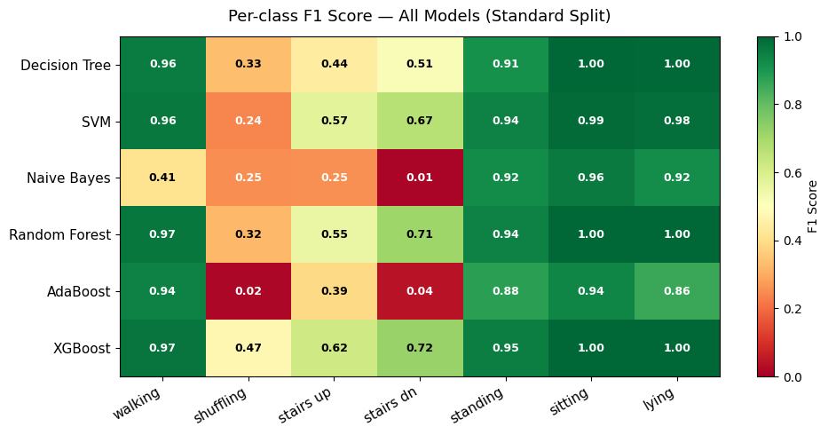
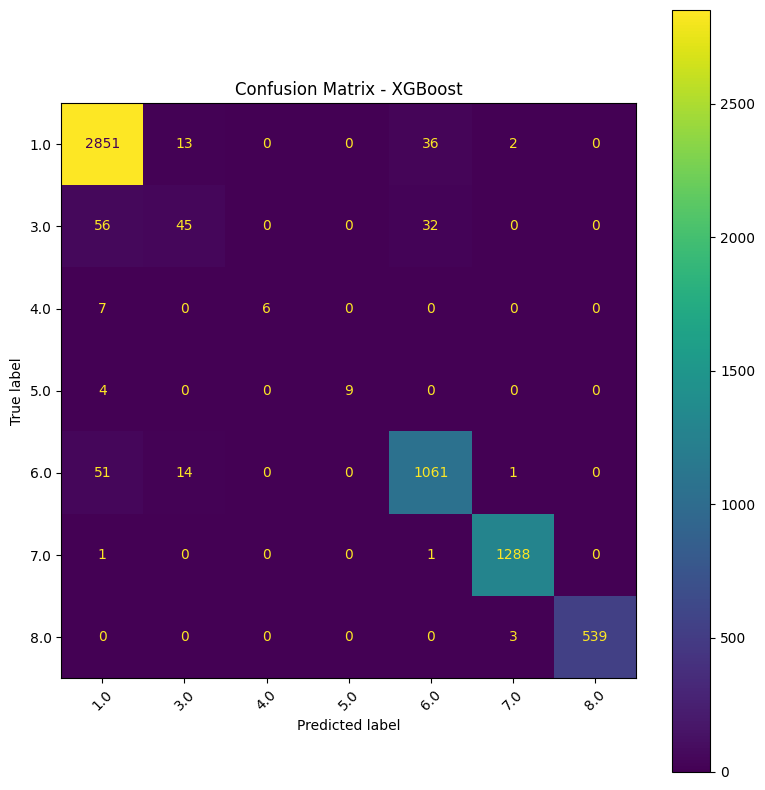

Machine Learning · CS 156 · Spring 2026 · Team of 5
Human Activity Recognition in Older Adults
Most activity‑tracking models are trained on young, healthy people. We built a machine‑learning pipeline that recognizes daily activities of adults aged 70–84, including walking‑aid users, from two body‑worn accelerometers.
At a glance
Problem
Activity recognition matters for fall detection and health monitoring, but older adults move differently (slower gait, shuffling, walking aids), so models trained on young people generalize poorly.
Data
HAR70+ dataset: 50 Hz accelerometers on the lower back and thigh. Activities: walking, shuffling, stairs up/down, standing, sitting and lying.
Approach
Clean signals, slice them into 2‑second windows, extract 56 features per window, then compare six classifiers and test on people the model has never seen.
Tools
The pipeline
- 1
Explore
Profile 18 subjects and 7 classes; uncover heavy class imbalance.
- 2
Preprocess
Per‑subject interpolation + Savitzky–Golay filter; add magnitude channels.
- 3
Window
Test 10 window sizes; choose 100 samples (2 s) with 50% overlap.
- 4
Features
7 time‑ and frequency‑domain stats × 8 channels = 56 features.
- 5
Model
Decision Tree, SVM, Naive Bayes, Random Forest, AdaBoost, XGBoost.
- 6
Evaluate
Macro F1, per‑class errors and Leave‑One‑Subject‑Out testing.
1 · Understanding the data
Each activity leaves a distinct “fingerprint” in the signal. Walking shows a regular spike at every footstep (about one per second), while shuffling, common in older adults, is irregular and low‑amplitude. That makes it easy to confuse with slow walking or standing.
The data is also heavily imbalanced: walking is about half of all samples, while stair climbing makes up less than 1%. That's why we report macro F1, which weights every activity equally, instead of relying on accuracy alone.



2 · Cleaning & windowing the signal

We filled sensor dropouts with interpolation within each person's recording, so no data leaked between subjects. Then we smoothed the signal with a Savitzky–Golay filter, which removes noise while keeping the shape of each step.
Next we cut the continuous stream into overlapping windows. We tested 10 window sizes (0.5 s to 6 s). 2‑second windows worked best: long enough to capture a full stride, short enough to avoid mixing two activities in one window.

3 · Feature engineering
For each window we computed 56 features across 8 channels (3 back axes, 3 thigh axes and 2 overall‑magnitude signals): mean, standard deviation, RMS, zero‑crossing rate, dominant frequency, spectral energy and spectral entropy.
We validated the feature table (45,167 windows × 56 features) and found zero missing or infinite values. Random Forest feature importance showed that thigh movement variability and energy were the strongest signals.

4 · Results
| Model | Macro F1 | Accuracy |
|---|---|---|
| XGBoost | 0.819 | 96.4% |
| Random Forest | 0.784 | 95.9% |
| SVM | 0.765 | 95.5% |
| Decision Tree | 0.736 | 94.1% |
| AdaBoost | 0.580 | 90.5% |
| Naive Bayes | 0.534 | 60.2% |
80/20 stratified split, 2‑second windows.
Gradient‑boosted trees (XGBoost) performed best. The gap between accuracy and macro F1 shows the effect of imbalance: models score well overall but struggle on rare activities.



5 · The key insight: testing on new people
A random train/test split lets the model see the same person in both training and testing, which inflates the score. With Leave‑One‑Subject‑Out testing, we trained on 17 people and tested on the 18th, repeating this for everyone. Random Forest dropped from 0.94 to 0.67 F1. That's the honest estimate of how a health‑monitoring product would perform for a new user, and it shows that person‑to‑person differences in gait are the real challenge.
What I learned
- Choose metrics that match the problem. On imbalanced data, accuracy can hide failures that macro F1 exposes.
- Watch for data leakage. Per‑subject preprocessing and LOSO evaluation give results you can trust.
- Feature engineering still matters. Well‑designed handcrafted features let classical models reach about 96% accuracy.
- Next steps: oversample rare classes (e.g., SMOTE), adapt models to each person, and train CNN/LSTM models on the 3D sequence tensor (45,167 × 100 × 8) we prepared.
Team: Yogi Chipalkatti, Sai Vishnumolakala, Jefle Legson, Dan Nguyen, Arsen Keneshbekov. Dataset: Ustad et al., “The HAR70+ Model,” Sensors 23(5), 2023.